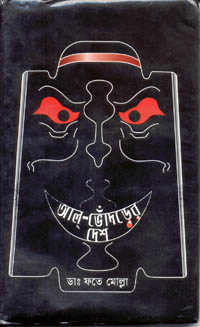

<html>

<head>
<meta http-equiv="Content-Type" content="text/html; charset=windows-1252">
<title>fatemolla's column</title>
<META NAME="description" CONTENT="Islamic cruelty">
<META NAME="keywords" CONTENT="fatemolla, women, woman, Islam, cruelty, Sharia, blasphemy, Bangladesh, Islamisation, Mukto-mona">

</head>

<body background="../../mukto_thinker_wm1.jpg" bgproperties="fixed">

<blockquote>
  <p class="MsoBodyText" align="center"><font color="#000080"><b style="mso-bidi-font-weight: normal"><font size="5">&nbsp;</font></b></font></p>
  <div align="center">
    <center>
                            <TABLE ID="NavigationBar2" BORDER=0 CELLSPACING=1 WIDTH=606 height="1">
                                <TR VALIGN=TOP ALIGN=LEFT>
                                    <TD WIDTH=101 height="1" align="center">
                                    <A HREF="../../index.html"><font size="2">
                                    </font></A></TD>
                                    <TD WIDTH=101 height="1" align="center">
                                    <A HREF="../articles.html"><font size="2">
                                    </font></A></TD>
                                    <TD WIDTH=101 height="1" align="center">
                                    <A HREF="../../Recent_Debate/recent_debate.html"><font size="2">
                                    </font></A></TD>
                                    <TD WIDTH=101 height="1" align="center">
                                    <A HREF="../../Special_Event_/special_event_.html"><font size="2">
                                    </font></A></TD>
                                    <TD WIDTH=101 height="1" align="center">
                                    <A HREF="../../Moderators/moderators.html"><font size="2">
                                    </font></A></TD>
                                    <TD WIDTH=101 HEIGHT=1 align="center">
                                    <A HREF="../../Forum/forum.html"><font size="2">
                                    </font></A></TD>
                                </TR>
                                <TR VALIGN=TOP ALIGN=LEFT>
                                    <TD WIDTH=101 align="center" bgcolor="#BFD8D9" height="6">
                                      <p align="left"><font size="2" color="#FFFFFF">&nbsp;<a href="../../women/index.html"><b>Women</b></a></font></TD>
                                    <TD WIDTH=202 bgcolor="#BFD8D9" align="center" colspan="2" height="6"><font size="2" color="#FFFFFF">
                                    <a href="../../human_rights/index.html"><b>Human
                                      Rights violation</b></a></font></TD>
                                    <TD WIDTH=202 bgcolor="#BFD8D9" align="center" colspan="2" height="6"><font size="2" color="#FFFFFF">
                                    <a href="../../personalities/index.html"><b>Great
                                      Personalities&nbsp;</b></a></font></TD>
                                    <TD WIDTH=101 HEIGHT=6 align="center" bgcolor="#BFD8D9">
                                      <p align="left"><font size="2" color="#FFFFFF">&nbsp;<a href="../../humour/index.html"><b>Humor</b></a></font></TD>
                                </TR>
                            </TABLE>
    </center>
  </div>
  <div align="center">
    <table cellSpacing="0" cellPadding="0" width="600" border="0">
      <tbody>
        <tr>
          <td colSpan="2" rowSpan="3"></td>
          <td class="k" bgColor="#6fb1d9"></td>
          <td align="right" colSpan="2" rowSpan="3"></td>
        </tr>
        <tr>
          <td class="h" bgColor="#eef5fa" height="22">
            <p align="center"><b><i><font color="#000080">fatemolla's Column</font></i></b></p>
          </td>
        </tr>
        <tr>
          <td class="k" width="1" bgColor="#6fb1d9"></td>
        </tr>
        <tr>
          <td class="k" width="1" bgColor="#6fb1d9"></td>
          <td width="18" bgColor="white"></td>
          <td bgColor="#FFFFFF">
  <table border="1" width="48%">
  </table>
  <p align="center"><font size="5" color="#800080" face="Impact">Islam’s Shame
  - tear behind the veil</font></p>
  <p align="center"><font color="#800000" size="4">By fatemolla&nbsp;</font></p>
  <p align="center">&nbsp;</p>
  <p><b><font face="Arial" color="#008000" size="2">Exactly 3:10 AM now. A clear
  sky out there with millions of glittering stars. Are they those unfortunate
  women, millions of the innocent victims of the <a href="http://humanists.net/avijit/article/silent_genocide.htm">silent
  genocide</a>  by our &quot;<a href="http://humanists.net/avijit/article/my_religion.htm">Peaceful
  Religion</a>&quot;? Are they trying to say something? See, there are faint
  smiles of satisfaction on their lips, glitter in their eyes ! Are they
  blessing those Mohaguru Aroz Alis, Ibne Warraqs, Avijits, Aparthibs, Dr. Sinas,
  Kamran Mirzas, Abul Kasems, Sabbir Ahmeds, Jaheds, Lopas, Nadiyas, Eeshitas,
  Bishnus, Adnans, Ramans, Padmas, Alexes, Setaras, Bonnyas, Snigdhas?</font></b></p>
  <p><b><font face="Arial" color="#008000" size="2">These are those tiny lamps
  blinking here and there to remove century old darkness. These are the little
  Prices Princesses who are churning the whole universe in search of the hidden
  life-bird of the demon.</font></b></p>
  <p><b><font face="Arial" color="#FF0000" size="2">Will they win?</font></b></p>
  <p><b><font face="Arial" color="#008000" size="2"><i>Exactly 3:15 AM now, but
  miles, miles to go before we sleep....</i></font></b></p>
  <p><b><font face="Arial" color="#008000" size="2"><i>fatemolla.</i></font></b></p>
  <p>&nbsp;</p>
  <p><b><font color="#000080"><span style="background-color: #00ffff">About the
  author</span></font><span style="BACKGROUND-COLOR: #00ffff"><font color="#000080">
  :</font></span></b></p>
  <p><font color="#000080">
  Mukto-mona is proud to present today our prominent member&nbsp; fatemolla who took
  active participation in the 1971 War of Liberation of Bangladesh as a freedom
  fighter and still continuing his fight as a prolific writer on religious and human
  rights issues. He is prominent in the mainstream print media as well as in
  internet. He writes regularly in Mukto-mona, NFB, ISS and in several print
  Bangla News papers.</font></p>
  <p><font color="#000080">He is working now&nbsp; in the field of Operational
  Quality Assurance in Canada.</font></p>
  <p><font color="#000080"><i>Following piece is excerpted from Aparthib's write-up
  ( published in Mukto-mona on <font size="+0">Fri&nbsp;Sep&nbsp;27,&nbsp;2002)</font></i></font><font color="#000080"><i>
  :</i></font></p>
  <blockquote>
    <p>Its time for those who have flair for poetry to pay tribute to our <b><font color="#FF0000"> great
    Socrates Fatemolla</font></b>. Let me initiate this with my humble offering to him,
    although running the risk of being deemed as one of those he addressed to in
    his fabulous &quot;Dohai Kobi&quot;, if not for its message, for its style
    (Or lack thereof!). Being a poetaster as I am, I don't have the audacity to
    enter into a Kobi Lorai (Battle of the poets, a moribund tradition of rural
    Bengal) with our poet extraordinaire Fatemolla, who has posted several of
    his gems in Bangla poems, one of those being a sincere effort to elevate me
    to a level I do not belong. Anyway I just want to reciprocate his generosity
    with my sincere tribute to him in a poem (or an apology thereof) . No fancy
    Bangla fonts, Just a simple transliteration in English (not following any
    transliterarion rules), with a literal rendering in English (no rhymes)
    following that:</p>
    <p><b>Amader Fatemolla</b></p>
    <pre>Fatemolla, boro molla, bishoy tar manobota dhormo
onayashey foteh korey manobik shob kormo
dhormio goramikey khoma korey nako shey
jar nindaey likhey jaey oshonko chittey
Dhormer boi shey jey porechhey entar
Shastrer kono kichhu ojana jey nei tar 
mukto-monar shey ujjal ak tara
takey peye shob anondey attohara</pre>
    <pre>Literal Translation:</pre>
    <pre><b>Our Fatemolla</b></pre>
    <pre>Fatemolla, the great teacher, of the religion of humanism
Accomplishes all humanistic pursuits with ease,
He does not tolerate any religious bigotry
against which he writes feralessly
He is widely read on books on religion
Nothing in scriptures is unknown to him
He is a shining star in Mukto-Mona
All are extremely happy to have him here.</pre>
    <pre>[-Aparthib]</pre>
  </blockquote>
  <p>Source: <a href="http://groups.yahoo.com/group/mukto-mona/message/7873">http://groups.yahoo.com/group/mukto-mona/message/7873</a>&nbsp;</p>
  <p><font color="#000080"><b>Long live fatemolla ! Long live freedom of speech
  !</b></font></p>
  <blockquote>
    <p>&nbsp;</p>
    <p><b><font color="#000080"><span style="background-color: #00ffff">Bangla
    book of fatemolla :</span></font></b></p>
    <table width="100%" border="0" cellspacing="3" cellpadding="3">
      <tbody>
        <tr>
          <td width="38%"><a href="http://fatemolla.faithweb.com/"></a></td>
          <td width="62%">
            <blockquote>
              <b>&quot;Aami- aal-bhodorer shaathey aami khelibo
            moron khela<br>
            Probhaato bela<br>
            <br>
            Aami- shugobhir nisshoney, jibon moron poney,<br>
            Kontho paakri dhoribo aakri duijona duijoney,<br>
            shoghono bishforoney,<br>
            Dongshonkhoto shyen bihongo, jujhi bhujongo shoney&quot;&nbsp;<i> -fatemolla</i></b>
            <p><b><a href="http://fatemolla.faithweb.com/">Read the book in
            Bangla</a></b></p>
            <p><b>Publisher:<br>
            Dibyo Prokash<br>
            38/2k Banglabazar<br>
            Dhaka -1100<br>
            <br>
            Phone: 880-2-7121574&nbsp;</b></p>
            </blockquote>
          </td>
        </tr>
      </tbody>
    </table>
    <p><b><br>
    <font color="#008000">&quot;I want to dream about complete communal harmony
    back to BD, and see my dream fulfilled&quot;</font> <font color="#009900">-<i>fatemolla&nbsp;</i></font></b></p>
  </blockquote>
  <hr noshade size="4">
  <p>&nbsp;</p>
  <p align="center"><b><span style="COLOR: navy"><font size="4">I&nbsp;&nbsp;&nbsp;
  APOLOGIZE.<O:P>
  </O:P>
  </font></span></b></p>
  <p class="MsoNormal" style="TEXT-ALIGN: center" align="center"><b><span lang="EN-GB" style="FONT-SIZE: 16pt; mso-bidi-font-size: 12.0pt">&nbsp;</span>By-fatemolla.<span lang="EN-GB"><O:P>
  </O:P>
  </span></b></p>
  <p class="MsoNormal" align="center"><b><span lang="EN-GB">&nbsp;</span><i><span lang="EN-GB"><font color="#ff0000">(<span style="mso-spacerun: yes">&nbsp;
  </span>“ Donditer<span style="mso-spacerun: yes">&nbsp; </span>Shathe,<br>
  Dondo-Data<span style="mso-spacerun: yes">&nbsp; </span>K(n)ade<span style="mso-spacerun: yes">&nbsp;
  </span>Jobe<span style="mso-spacerun: yes">&nbsp; </span>Shoman<span style="mso-spacerun: yes">&nbsp;&nbsp;
  </span>Aaghate,<br>
  Shorbo-Shreshtho<span style="mso-spacerun: yes">&nbsp; </span>Se<span style="mso-spacerun: yes">&nbsp;
  </span>Bichaar”. )<span style="mso-spacerun: yes">&nbsp;&nbsp;&nbsp; </span>~Kobiguru.<O:P>
  </O:P>
  </font></span></i></b></p>
  <p class="MsoNormal" style="TEXT-ALIGN: justify"><b><span lang="EN-GB">&nbsp;<O:P>
  </O:P>
  </span></b></p>
  <blockquote>
    <p class="MsoNormal" style="TEXT-ALIGN: justify"><b><span lang="EN-GB"><font color="#000080">You
    are a Muslim-woman.<span style="mso-spacerun: yes">&nbsp; </span>You are a
    loving daughter of your poor village-parents, loving doll of your
    brothers/sisters.<span style="mso-spacerun: yes">&nbsp; </span>Without much
    formal education, you are thorough in your devotion to Allah/Prophet (SA)/Qur’aan,
    in your Namaz, Roja, Zakat, and other Islami rituals.<span style="mso-spacerun: yes">&nbsp;
    </span>Though unsung and unlamented, you continuously work hard for your
    home and loving kids. Your husband is an average guy. He works hard for the
    family and in last 10/15 years made some properties also. You are happy,
    content.<O:P>
    </O:P>
    </font></span></b></p>
    <p class="MsoNormal" style="TEXT-ALIGN: justify"><b><span lang="EN-GB"><font color="#000080">&nbsp;And
    then the thunder brakes down on your head, for no fault of yours.<O:P>
    </O:P>
    </font></span></b></p>
    <p class="MsoNormal" style="TEXT-ALIGN: justify"><b><span lang="EN-GB"><font color="#000080">&nbsp;For
    silly reason, your husband gets upset with you and utters “Talaq” three
    times in a row. And he gets stunned. He did not really mean to divorce you,
    and realizes his blunder immediately. But the neighbors overhear his
    utterance and reach it to the Chairman of the Union Porishod. The Chairman
    feels it necessary to observe the Islamic Law. He declares that you are
    divorced. You will have to leave the house after the Iddat,<span style="mso-spacerun: yes">&nbsp;
    </span>and<span style="mso-spacerun: yes">&nbsp; </span>observe “hijab”
    to your “ex”-husband, the same person whom you gifted kids and shared
    bed/life with.<O:P>
    </O:P>
    </font></span></b></p>
    <p class="MsoNormal" style="TEXT-ALIGN: justify"><span lang="EN-GB"><b><font color="#000080">The
    Imam does not quite agree with the finality of the divorce because the
    utterances were done all at one time.</font><span style="mso-spacerun: yes"><font color="#000080">&nbsp;</font>
    </span><font color="#0000ff">He brings Maolana Wahiduddin’s<span style="mso-spacerun: yes">&nbsp;
    </span>“Woman in Islamic Shariah” and shows from page 109 that according
    to a hadis of Abu Daud ( Sahi Sitta), the prophet (SA)<span style="mso-spacerun: yes">&nbsp;
    </span>took three utterances at one time as one utterance. He also shows
    from page 51 of Md Sharif Chaudhry’s “Women’s Rights in Islam” that
    a hadis of Nisai ( Sahi Sitta) records the Prophet (SA) got extremely angry
    with a case like this and<span style="mso-spacerun: yes">&nbsp; </span>said</font><font color="#ff0000">
    </font></b><font color="#ff0000"><font face="Comic Sans MS">“Are you
    playing with the Book of Almighty and Glorious Allah while I am ( still)
    amongst you”</font><b>?</b></font><b><span style="mso-spacerun: yes">&nbsp;
    </span><font color="#000080">The same he shows again in page 127 in the
    Bangla translation of the Qur’aan by Maolana<span style="mso-spacerun: yes">&nbsp;&nbsp;
    </span>Muhiuddin Khan.<span style="mso-spacerun: yes">&nbsp; </span>(This
    book he bought from a bookshop by cash money though at the bottom of the 2<sup>nd</sup>
    page it is written that this is only for free distribution from the Saudi
    King, and not for sale).<span style="mso-spacerun: yes">&nbsp; </span>But
    the Imam was defeated. The Chairman showed from the page 110 of the same
    book of Maolana Wahiduddin that latter Khalifa Omar (RA) validated the
    divorce with three utterances at one time, though he used to whip the
    husbands for this ‘crime’ against the Qur’aan.<O:P>
    </O:P>
    </font></b></span></p>
    <p class="MsoNormal" style="TEXT-ALIGN: justify"><b><span lang="EN-GB"><font color="#000080">&nbsp;So,
    you are divorced now.<span style="mso-spacerun: yes">&nbsp; </span>What is
    your fault?<span style="mso-spacerun: yes">&nbsp; </span>You don’t know.<O:P>
    </font></O:P>
    </span></b></p>
    <p class="MsoNormal" style="TEXT-ALIGN: justify"><b><span lang="EN-GB"><font color="#0000ff">&nbsp;They
    open the Qur’aan and read the divine instruction from Sura Al-Bakara <O:P>
    </O:P>
    </font></span></b></p>
    <p class="MsoNormal" style="TEXT-ALIGN: justify"><span lang="EN-GB"><font color="#ff0000"><b>(
    Sura-Cow)-230:-<span style="mso-spacerun: yes">&nbsp; </span></b><font face="Comic Sans MS">“So
    if he divorces her ( for a third time) then she shall not be lawful to<span style="mso-spacerun: yes">&nbsp;
    </span>him until she weds another husband;<span style="mso-spacerun: yes">&nbsp;
    </span>and if he (also) divorces her, then<span style="mso-spacerun: yes">&nbsp;
    </span>there shall be no sin on either of them if they return to each
    other………..” ( translated by molla,- please double check for
    “distortion”</font><b>. )</b></font><b><O:P>
    </O:P>
    </b></span></p>
    <p class="MsoNormal" style="TEXT-ALIGN: justify"><b><span lang="EN-GB">&nbsp;<font color="#0000ff">So
    now you must marry somebody else and then get divorced by him to be
    re-united with your home, your kids and husband!</font><font color="#ff0000">
    </font><font color="#000080">You stand like a statue of stone. Your husband
    stands like a statue of stone, speechless, like a helpless orphan in front
    an extremely powerful religious system.<span style="mso-spacerun: yes">&nbsp;
    </span>There is a chance of repentance and hope of pardon from Allah for
    heinous crimes like killing, rape, theft or robbery.<span style="mso-spacerun: yes">&nbsp;
    </span>But there is no chance for you or your husband for his simple slip of
    tongue.<span style="mso-spacerun: yes">&nbsp; </span>Allah knows, he did not
    mean to divorce you.<span style="mso-spacerun: yes">&nbsp; </span>The whole
    village stood speechless.<O:P>
    </O:P>
    </font></span></b></p>
    <p class="MsoNormal" style="TEXT-ALIGN: justify"><b><span lang="EN-GB"><font color="#000080">&nbsp;You
    never even thought of “marrying” anybody else. You feel shocked,
    humiliated, finished.<span style="mso-spacerun: yes">&nbsp; </span>But there
    is no room for feeling in a law.<span style="mso-spacerun: yes">&nbsp; </span>With
    ocean of tears you and your husband agree to the “marriage”.<span style="mso-spacerun: yes">&nbsp;
    </span>Somebody comes up. He is an honest guy.<span style="mso-spacerun: yes">&nbsp;
    </span>He agrees to marry and then divorce you, plans in his mind not to
    touch you, to keep your physical chastity.<span style="mso-spacerun: yes">&nbsp;
    </span><O:P>
    </O:P>
    </font></span></b></p>
    <p class="MsoNormal" style="TEXT-ALIGN: justify"><b><span lang="EN-GB"><font color="#000080">&nbsp;But
    no! It was not that easy! There the Chairman opens the details of Islami
    Sharia. He reads it to others:- <O:P>
    </O:P>
    </font></span></b></p>
    <p class="MsoNormal" style="TEXT-ALIGN: justify"><b><span lang="EN-GB"><font color="#000080">&nbsp;Rule
    No#2536. ………She becomes haraam for him after the third divorce. But if
    she marries another man after the third divorce, she becomes halal for the
    first husband on fulfilment of five conditions, that is, only then he can
    remarry her:<O:P>
    </font></O:P>
    </span></b></p>
    <p class="MsoNormal" style="TEXT-ALIGN: justify"><b><span lang="EN-GB">&nbsp;<O:P>
    </O:P>
    </span></b></p>
    <ol style="MARGIN-TOP: 0in" type="1">
      <li class="MsoNormal" style="TEXT-ALIGN: justify; mso-list: l0 level1 lfo1; tab-stops: list .5in"><b><span lang="EN-GB"><font color="#ff0000">The
        marriage with the second person should have been of permanent nature. If
        he contracts wither a temporary marriage for one month or a year, and
        then separates from her, the first husband can not marry her.</font></span></b></li>
    </ol>
    <ol style="MARGIN-TOP: 0in" type="1" start="2">
      <li class="MsoNormal" style="TEXT-ALIGN: justify; mso-list: l0 level1 lfo1; tab-stops: list .5in"><b><span lang="EN-GB"><font color="#ff0000">The
        second husband should have had sexual intercourse wither, and the
        obligatory precaution is that the sexual intercourse should have taken
        place in a normal way.</font></span></b></li>
    </ol>
    <ol style="MARGIN-TOP: 0in" type="1" start="3">
      <li class="MsoNormal" style="TEXT-ALIGN: justify; mso-list: l0 level1 lfo1; tab-stops: list .5in"><b><span lang="EN-GB"><font color="#ff0000">The
        second husband divorces her, or dies.</font></span></b></li>
    </ol>
    <ol style="MARGIN-TOP: 0in" type="1" start="4">
      <li class="MsoNormal" style="TEXT-ALIGN: justify; mso-list: l0 level1 lfo1; tab-stops: list .5in"><b><span lang="EN-GB"><font color="#ff0000">The
        waiting period<span style="mso-spacerun: yes">&nbsp; </span>(iddah) of
        divorce or iddah of death of the second husband should have come to an
        end.</font></span></b></li>
    </ol>
    <ol style="MARGIN-TOP: 0in" type="1" start="5">
      <li class="MsoNormal" style="TEXT-ALIGN: justify; mso-list: l0 level1 lfo1; tab-stops: list .5in"><b><span lang="EN-GB"><font color="#ff0000">On
        the basis of obligatory precaution the second husband should have been
        Baligh (means adult - fatemolla) at the time of intercourse.<span style="mso-spacerun: yes">&nbsp;
        </span>(fatemolla says:-<span style="mso-spacerun: yes">&nbsp; </span>how
        come a<span style="mso-spacerun: yes">&nbsp; </span>non-Baligh, means
        non-adult…………Oh! Forget it!)<span style="mso-spacerun: yes">&nbsp;
        </span><O:P>
        </O:P>
        </font></span></b></li>
    </ol>
    <p class="MsoNormal" style="MARGIN-LEFT: 0.25in; TEXT-ALIGN: justify"><b><span lang="EN-GB"><span style="mso-spacerun: yes">&nbsp;</span><O:P>
    </O:P>
    </span></b></p>
    <p class="MsoNormal" style="TEXT-ALIGN: justify"><span lang="EN-GB"><b><font color="#000080">Your
    husband in a broken voice raises the point that the Sharia Book is written
    by Ayatullah al Uzama Syed Ali al-Husaini Seestani, the top legal authority
    of 200 plus million Shias, and may not be applicable to you because you are
    Sunni. Poor man takes a last desperate chance to save you from taking your
    cloths off to another man, “legally”.</font><span style="mso-spacerun: yes">&nbsp;
    </span><font color="#0000ff">The Imam again opens the Bangla-Qur’aan and
    reads the Tafseer from page 126:-</font> </b><font face="Comic Sans MS" color="#ff0000">“
    The condition of their re-marriage is, the wife will marry somebody else
    after the Iddat. And if for any reason the second husband divorces her after
    the sexual relation , or he dies, then she can re-marry the first husband
    after the Iddat.”</font><b><span style="mso-spacerun: yes">&nbsp; </span>(translated
    by molla, please double check!).<span style="mso-spacerun: yes">&nbsp;</span><br>
    Then somebody brings <font color="#0000ff">“Moksudul Momeneen” by Alhaz<span style="mso-spacerun: yes">&nbsp;
    </span>Md. Lutful Alam, and reads from page 231:-</font><span style="mso-spacerun: yes">
    </span></b><font face="Comic Sans MS" color="#ff0000">“ The foremost
    condition of HILA ( the second marriage) is a definite sexual intercourse
    with the second husband. HILA must be according to Sharia like a common
    marriage. There must not be any condition of divorce or anything else. There
    must not be a divorce from the second husband by force.<span style="mso-spacerun: yes">&nbsp;
    </span>He will divorce according to his will. There is nothing to do if he
    does not divorce”</font><b><font color="#ff0000">.</font><O:P>
    </O:P>
    </b></span></p>
    <p class="MsoNormal" style="TEXT-ALIGN: justify"><b><span lang="EN-GB">&nbsp;</span></b><font color="#000080"><span lang="EN-GB">Are
    you listening?<span style="mso-spacerun: yes">&nbsp; </span>Are you hearing
    anything, seeing anything? Are you trying to say something? You seem to be
    deaf, dumb and blind.<span style="mso-spacerun: yes">&nbsp; </span>You
    always believed in Keyamat.<span style="mso-spacerun: yes">&nbsp; </span>Keyamat
    is here, now, for you. A hundred times you have read the Qur’aan with
    total devotion,<span style="mso-spacerun: yes">&nbsp; </span>4:79 “
    Whatever good befalls you it is from God and whatever evil befalls you it is
    from yourself…..”.<span style="mso-spacerun: yes">&nbsp;&nbsp; </span>So
    you restlessly look for your fault in heaven and earth. You do not see any.
    Now you have to perform the same acts in the kitchen and in the bed you did
    with your loving husband.</span><span lang="EN-GB" style="FONT-WEIGHT: normal">
    </span><span lang="EN-GB">You feel a knife on your throat. Your husband
    feels a knife on his throat. Your children are shaking like animals in front
    of slaughterhouse. They will never recover from the trauma they are
    undergoing now.<span style="mso-spacerun: yes">&nbsp; </span>They will never
    be able to recover from it, be able to become complete human beings.<span style="mso-spacerun: yes">&nbsp;</span></span></font></p>
    <p class="MsoBodyText"><span lang="EN-GB" style="FONT-WEIGHT: normal">&nbsp;<O:P>
    </O:P>
    </span></p>
    <p class="MsoNormal" style="TEXT-ALIGN: justify"><b><span lang="EN-GB"><font color="#0000ff">THAT
    IS “HILA”,<span style="mso-spacerun: yes">&nbsp; </span>ONE OF THE LAWS
    OF ISLAMI SHARIA, UNDISPUTED BY ALL THE SECTS.<span style="mso-spacerun: yes">&nbsp;
    </span>They kill each other even in the mosques for being Shia/Sunni/Ahmadi,
    but all of them are quite univocal about the cruel devastating effect of
    some Islami rules/laws/regulations on your life. They don’t realise how
    precious your life is. They fail to respect your incredibly complicated
    systems of body and mind which nature developed through its incredible
    effort and craftsmanship of millions of years with utmost love and care.</font><O:P>
    </O:P>
    </span></b></p>
    <p class="MsoNormal" style="TEXT-ALIGN: justify"><b><span lang="EN-GB">&nbsp;<O:P>
    </O:P>
    </span></b></p>
    <p class="MsoNormal" style="TEXT-ALIGN: justify"><span lang="EN-GB"><i><font face="Comic Sans MS" color="#ff0000">I
    cannot save you, dear sister! I can only scream, and that is exactly what I
    am doing. We want Pakistan to apologize to us for the genocide on us in
    1971. In different countries conscience people apologized for the crimes
    their ancestors did to others before centuries. For sure one day you will
    stand strong against this immense suffering for no fault of yours. You will
    say, if any religious system tortures innocent wo/mankind, it surely is some
    devil in disguise of religion.<span style="mso-spacerun: yes">&nbsp; </span>Nobody
    has the slightest right to molest your dignity as a human being, if you are
    innocent. And you know that you are innocent. <O:P>
    </O:P>
    </font></i></span></p>
    <p class="MsoNormal" style="TEXT-ALIGN: justify"><b><span lang="EN-GB">&nbsp;<O:P>
    </O:P>
    </span></b></p>
    <p class="MsoBodyText"><font color="#000080"><span lang="EN-GB">Before that
    happens, today with ocean of tears I deeply apologize to you for the torture
    we did on you for centuries. I cannot do that on behalf of all men because I
    am not authorized to do so.<span style="mso-spacerun: yes">&nbsp; </span>But
    a day will come when all the men of Islam will realise your pain and will
    sincerely apologize to you, my dear sister.</span></font><span lang="EN-GB" style="FONT-WEIGHT: normal"><font color="#000080"><O:P>
    </font></O:P>
    </span></p>
    <p class="MsoNormal" style="TEXT-ALIGN: justify"><b><i><span lang="EN-GB">&nbsp;<O:P>
    </O:P>
    </span></i></b></p>
    <p class="MsoBodyText2"><span lang="EN-GB">(<font color="#008000"><b>DEAR
    READERS, fatemolla IS NOT THE WRITER OF THIS ARTICLE.<span style="mso-spacerun: yes">&nbsp;
    </span>MILLIONS OF DEVASTATED SISTERS WROTE IT IN HIS HEART WITH THEIR
    IMMENSE CRIES OF PAIN. IF IT IS WRITTEN YOUR HEART TOO, PLEASE<span style="mso-spacerun: yes">&nbsp;
    </span>PROPAGATE IT IN ANY /WITHOUT<span style="mso-spacerun: yes">&nbsp; </span>NAME.</b></font>
    )</span></p>
  </blockquote>
  <hr noshade size="4">
  <p>&nbsp;</p>
  <p><b><font size="5"><font color="#000080">Fatemolla's Articles</font>&nbsp; </font><font color="#000080"><font size="3">(Published
  in Mukto-mona)</font><font size="5">:&nbsp;</font></font></b></p>
  <table border="0" cellpadding="7" cellspacing="7" width="100%">
    <tr>
      <td width="50%"><b><font color="#000080"><span style="background-color: #00ffff">Oppressed
        women</span></font><span style="BACKGROUND-COLOR: #00ffff"><font color="#000080">
        :</font></span></b>
        <p><a href="http://humanists.net/avijit/article/silent_genocide.htm"><b><font size="2">the
        silent genocide</font></b></a><font size="2"><o:p>
        </o:p>
        </font></p>
        <p><font size="2"><a href="http://humanists.net/avijit/article/hial_mia.htm"><b>mr.
        hila mia</b></a><o:p>
        </o:p>
        </font></p>
        <p><font size="2"><a href="http://humanists.net/avijit/article/back_to_square_one.htm"><b>back
        to square one</b></a><o:p>
        </o:p>
        </font></p>
        <p><font size="2"><a href="http://humanists.net/avijit/article/sorry_my_love.htm"><b>sorry
        my love!</b></a><b> </b><o:p>
        </o:p>
        </font></p>
        <p><font size="2"><a href="http://groups.yahoo.com/group/mukto-mona/message/4125" target="_blank"><b>let
        her sleep !</b></a><o:p>
        </o:p>
        </font></p>
        <p><font size="2"><a href="http://groups.yahoo.com/group/mukto-mona/message/5101" target="_blank"><b>4
        wives in islam</b></a><b> (part 1)</b><o:p>
        </o:p>
        </font></p>
        <p><font size="2"><a href="file:///C:/Avijit/Mukto-mona/mainwebsite_html/Articles/fatemolla/4_wives_islam2.htm" target="_blank"><b>4
        wives in islam</b></a><b> (part 2)</b><o:p>
        </o:p>
        </font></p>
        <p><font size="2"><b><a href="file:///C:/Avijit/Mukto-mona/mainwebsite_html/Articles/fatemolla/fgm.htm" target="_blank">fgm</a>
        </b><o:p>
        </o:p>
        </font></p>
        <p><font size="2"><a href="http://groups.yahoo.com/group/mukto-mona/message/3201" target="_blank"><b>taslima's
        border</b></a><o:p>
        </o:p>
        </font></p>
        <p><font size="2"><a href="http://humanists.net/avijit/article/not_for_you_women_1.htm"><b>not
        for you, women!!!</b></a><b> (part 1)</b><o:p>
        </o:p>
        </font></p>
        <p><font size="2"><a href="http://humanists.net/avijit/article/not_for_you_women_2.htm"><b>not
        for you, women!!!</b></a><b> (part 2)&nbsp;</b></font></p>
        <p>&nbsp;</p>
        <p><b><font color="#000080"><span style="background-color: #00ffff"><a name="sharia"></a>Sharia</span></font></b></p>
        <p><a href="http://groups.yahoo.com/group/mukto-mona/message/7501" target="_blank"><b><font size="2">sharia
        – the most dangerous book in the world.</font></b></a></p>
        <p><font size="2"><a href="http://groups.yahoo.com/group/mukto-mona/message/7704" target="_blank"><b>sharia,
        the most dangerous law in the world - 2.</b></a><b>&nbsp;</b></font></p>
        <p><a href="http://groups.yahoo.com/group/mukto-mona/message/7797" target="_blank"><b><font size="2">sharia
        : the anti – hero</font></b></a></p>
        <p><b><a href="http://groups.yahoo.com/group/mukto-mona/message/7981"><font size="2">sharia
        : the women-eater</font></a></b></p>
        <p><a href="http://groups.yahoo.com/group/mukto-mona/message/8107"><b><font size="2">sharia
        – the root cause of violence.</font></b></a><font size="2"><b> </b><o:p>
        </o:p>
        </font></p>
        <p><b><font size="2"><a href="http://groups.yahoo.com/group/mukto-mona/message/8035">sharia
        - out of context.</a>&nbsp;</font></b></p>
        <p>&nbsp;</p>
        <p><b><font color="#000080"><span style="background-color: #00ffff">Ancient
        Bengal</span></font></b></p>
        <p><a href="http://groups.yahoo.com/group/mukto-mona/message/7402" target="_blank"><b><font size="2">three
        hours of destiny</font></b></a><font size="2"><b> </b><o:p>
        </o:p>
        </font></p>
        <p><font size="2"><a href="http://groups.yahoo.com/group/mukto-mona/message/6738" target="_blank"><b>jobba</b></a><b>
        (bangla) </b><o:p>
        </o:p>
        </font></p>
        <p><font size="2"><a href="http://groups.yahoo.com/group/mukto-mona/message/6505" target="_blank"><b>dhrubo
        tara </b></a><b>(bangla) </b><o:p>
        </o:p>
        </font></p>
        <p><font size="2"><a href="http://groups.yahoo.com/group/mukto-mona/message/6449"><b>shworno
        - mrigo</b></a><b> (bangla) </b><o:p>
        </o:p>
        </font></p>
        <p><font size="2"><a href="http://groups.yahoo.com/group/mukto-mona/message/6129" target="_blank"><b>e
        nohe tomar</b></a> <b>(bangla) </b><o:p>
        </o:p>
        </font></p>
        <p><font size="2"><a href="http://groups.yahoo.com/group/mukto-mona/message/5608" target="_blank"><b>mashe-e-e
        !!</b></a><b> (bangla) </b><o:p>
        </o:p>
        </font></p>
        <p><font size="2"><a href="http://groups.yahoo.com/group/mukto-mona/message/5464"><b>nater
        guru.</b></a><b> (bangla)&nbsp;</b></font></p>
        <p>&nbsp;</p>
        <p><b><font color="#000080"><span style="background-color: #00ffff">Humor</span></font></b></p>
        <p><a href="http://www.humanists.net/avijit/fatemolla/article/chope.htm"><b><font size="2">ch-o-o-p-e!</font></b></a><font size="2"><o:p>
        </o:p>
        </font></p>
        <p><font size="2"><a href="http://groups.yahoo.com/group/mukto-mona/message/7353" target="_blank"><b>our
        d-groups – 1 &amp; 2.</b></a><b> </b>&nbsp;<o:p>
        </o:p>
        </font></p>
        <p><a href="http://groups.yahoo.com/group/mukto-mona/message/6673" target="_blank"><b><font size="2">the
        kolki-dialogue</font></b></a><b><font size="2">&nbsp;</font></b></p>
        <p><font size="2"><a href="http://groups.yahoo.com/group/mukto-mona/message/4435"><b>sixteen
        bananas !</b></a><o:p>
        &nbsp;
        </font></p>
        <p>&nbsp;</p>
        <p><b><font color="#000080"><span style="background-color: #00ffff">Other
        Articles</span></font></b></p>
        <p><font size="2"><a href="http://humanists.net/avijit/fatemolla/mukto_mona.htm" target="_blank"><b>mukto-mona
        : the running baby</b></a><o:p>
        </o:p>
        </font></p>
        <p><font size="2"><a href="http://groups.yahoo.com/group/mukto-mona/message/5803" target="_blank"><b>rabindre
        nazrul</b></a><b> </b><o:p>
        </o:p>
        </font></p>
        <p><font size="2"><a href="http://groups.yahoo.com/group/mukto-mona/message/4256"><b>our
        invisible heroes / heroines.</b></a><o:p>
        </o:p>
        </font></p>
        <p><a href="http://groups.yahoo.com/group/mukto-mona/message/2229" target="_blank"><b><font size="2">the
        ivory you need to know about</font></b></a></p>
        <p>&nbsp;</td>
      <td width="50%"><b><font color="#000080"><span style="background-color: #00ffff">Cruelty
        in Religion</span></font><span style="BACKGROUND-COLOR: #00ffff"><font color="#000080">:</font></span></b>
        <p><a href="http://humanists.net/avijit/article/my_religion.htm"><b><font size="2">my
        religion</font></b></a><font size="2"><o:p>
        </o:p>
        </font></p>
        <p><font size="2"><b><a href="http://groups.yahoo.com/group/mukto-mona/message/8309" target="_blank">islam
        bashing; the way i see it</a> </b><o:p>
        </o:p>
        </font></p>
        <p><font size="2"><a href="http://groups.yahoo.com/group/mukto-mona/message/4896" target="_blank"><b>egyptian
        “g(n)oshai” of islam</b></a><b> </b><o:p>
        </o:p>
        </font></p>
        <p><font size="2"><a href="http://groups.yahoo.com/group/mukto-mona/message/4952" target="_blank"><b>to
        egyptian gnoshai 2.</b></a><o:p>
        </o:p>
        </font></p>
        <p><font size="2"><a href="http://groups.yahoo.com/group/mukto-mona/message/6463" target="_blank"><b>islam
        and democracy</b></a><b> </b><o:p>
        </o:p>
        </font></p>
        <p><font size="2"><a href="http://groups.yahoo.com/group/mukto-mona/message/4482" target="_blank"><b>democratic
        islam - the impossibility</b></a><o:p>
        </o:p>
        </font></p>
        <p><font size="2"><a href="http://groups.yahoo.com/group/mukto-mona/message/3971"><b>difficult
        islam</b></a><o:p>
        </o:p>
        </font></p>
        <p><font size="2"><a href="http://groups.yahoo.com/group/mukto-mona/message/6216" target="_blank"><b>penal
        code of islam</b></a><b> </b><o:p>
        </o:p>
        </font></p>
        <p><font size="2"><a href="http://groups.yahoo.com/group/mukto-mona/message/3356" target="_blank"><b>murtaad</b></a><o:p>
        </o:p>
        </font></p>
        <p><font size="2"><a href="http://groups.yahoo.com/group/mukto-mona/message/7888"><b>boddo
        legechhe.</b></a><b> (bangla)</b></font></p>
        <p><a href="http://groups.yahoo.com/group/mukto-mona/message/7061" target="_blank"><b>f-o-r-i-y-a-d</b></a><b>
        (bangla)</b></p>
        <p>&nbsp;</p>
        <p><b><font color="#000080"><span style="background-color: #00ffff">Absurdities
        in Scripture</span></font></b></p>
        <p><b><a href="http://humanists.net/avijit/article/debate/quranic_debate1_fatemolla.htm"><font size="2">qura'anic
        debate (part-1)</font></a><font size="2">&nbsp;</font></b><font size="2"><o:p>
        </o:p>
        </font></p>
        <p><b><a href="http://humanists.net/avijit/article/debate/quranic_debate2_fatemolla.htm"><font size="2">qura'anic
        debate (part-2)</font></a></b><font size="2"><o:p>
        </o:p>
        </font></p>
        <p><a href="http://humanists.net/avijit/article/about_sahi_bukhari.htm"><b><font size="2">about
        sahi-bokhari</font></b></a><b><font size="2">&nbsp;</font></b></p>
        <p>&nbsp;</p>
        <p><b><font color="#000080"><span style="background-color: #00ffff">1971</span></font></b></p>
        <p><a href="http://groups.yahoo.com/group/mukto-mona/message/6862" target="_blank"><b><font size="2">&quot;broooooooootherhood&quot;</font></b></a><font size="2"><o:p>
        </o:p>
        </font></p>
        <p><font size="2"><a href="http://groups.yahoo.com/group/mukto-mona/message/6955"><b>&quot;brothers&quot;
        - 2</b></a><o:p>
        </o:p>
        </font></p>
        <p><font size="2"><a href="http://groups.yahoo.com/group/mukto-mona/message/7052" target="_blank"><b>“brothers”-3</b></a><o:p>
        </o:p>
        </font></p>
        <p><font size="2"><a href="http://groups.yahoo.com/group/mukto-mona/message/7098" target="_blank"><b>&quot;brothers&quot;-
        4</b></a><b> </b><o:p>
        </o:p>
        </font></p>
        <p><font size="2"><a href="http://groups.yahoo.com/group/mukto-mona/message/7022"><b>welcome,
        your excellency.</b></a><b> </b><o:p>
        </o:p>
        </font></p>
        <p><font size="2"><b><a href="http://www.humanists.net/avijit/fatemolla/article/makers_of_history.htm">the
        makers of the history</a> </b><o:p>
        </o:p>
        </font></p>
        <p><a href="http://groups.yahoo.com/group/mukto-mona/message/5109" target="_blank"><b><font size="2">kernel
        of 1971</font></b></a></p>
        <p>&nbsp;</p>
        <p><b><font color="#000080"><span style="background-color: #00ffff">Personalities</span></font></b></p>
        <p><a href="http://groups.yahoo.com/group/mukto-mona/message/7304" target="_blank"><b><font size="2">there
        he goes, forever</font></b></a><font size="2"><b> </b><o:p>
        </o:p>
        </font></p>
        <p><font size="2"><a href="http://groups.yahoo.com/group/mukto-mona/message/4684" target="_blank"><b>don’t
        forget her</b></a><b> </b><o:p>
        </o:p>
        </font></p>
        <p><font size="2"><a href="http://groups.yahoo.com/group/mukto-mona/message/7175" target="_blank"><b>ogadh
        sholil</b></a><b> </b><o:p>
        </o:p>
        </font></p>
        <p><a href="http://groups.yahoo.com/group/mukto-mona/message/7190" target="_blank"><b><font size="2">the
        number-game of 3 million</font></b></a><b><font size="2">&nbsp;</font></b></p>
        <p>&nbsp;</p>
        <p><b><font color="#000080"><span style="background-color: #00ffff">Poem</span></font></b></p>
        <p><b><a href="http://www.humanists.net/avijit/fatemolla/kobita/index.html"><font size="2">na-bojhar
        bojha</font></a><font size="2"> (bangla) </font></b><font size="2"><o:p>
        </o:p>
        </font></p>
        <p><font size="2"><a href="http://groups.yahoo.com/group/mukto-mona/message/6373" target="_blank"><b>jamater
        plan</b></a><b> (bangla) </b><o:p>
        </o:p>
        </font></p>
        <p><font size="2"><a href="http://groups.yahoo.com/group/mukto-mona/message/7845" target="_blank"><b>amader
        oparthib</b></a><b> (bangla)</b><o:p>
        </o:p>
        </font></p>
        <p><font size="2"><a href="http://groups.yahoo.com/group/mukto-mona/message/7798" target="_blank"><b>amra
        shobai pnarh mataal !!</b></a><b> (bangla) </b><o:p>
        </o:p>
        </font></p>
        <p><font size="2"><b><a href="http://groups.yahoo.com/group/mukto-mona/message/7446" target="_blank">shommeloner
        chalak- chotur</a> (bangla)</b><o:p>
        </o:p>
        </font></p>
        <p><font size="2"><b><a href="http://groups.yahoo.com/group/mukto-mona/message/7357" target="_blank">murkho
        - monar prolaap</a> (bangla) </b><o:p>
        </o:p>
        </font></p>
        <p><font size="2"><b><a href="http://groups.yahoo.com/group/mukto-mona/message/6613" target="_blank">tomar
        golpo</a> (bangla) </b><o:p>
        </o:p>
        </font></p>
        <p><font size="2"><a href="http://groups.yahoo.com/group/mukto-mona/message/5438" target="_blank"><b>bangladesh
        shommelon</b></a> <b>(bangla) </b><o:p>
        </o:p>
        </font></p>
        <p><font size="2"><a href="http://groups.yahoo.com/group/mukto-mona/message/5437"><b>adalot</b></a><b>
        (bangla)&nbsp;</b></font></td>
    </tr>
  </table>
  <p align="center"><a href="fate_molla.pdf"></a>&nbsp;<font color="#0000FF"><br>
  (<a href="fate_molla.pdf">Bangla</a>)</font>
  <p align="center">&nbsp;
          </td>
          <td width="14" bgColor="white"></td>
          <td class="k" width="1" bgColor="#6fb1d9"></td>
        </tr>
        <tr>
          <td vAlign="top" align="left" colSpan="2" rowSpan="2"></td>
          <td bgColor="white"></td>
          <td vAlign="top" align="right" colSpan="2" rowSpan="2"></td>
        </tr>
        <tr>
          <td class="k" bgColor="#6fb1d9"></td>
        </tr>
      </tbody>
    </table>
  </div>
</blockquote>

<p class="MsoNormal" align="center">[<A HREF="../../index.html">Mukto-mona</A>]  [<A HREF="../articles.html">Articles</A>]  [<A HREF="../../Recent_Debate/recent_debate.html">Recent&nbsp;Debate</A>]  [<A HREF="../../Special_Event_/special_event_.html">Special&nbsp;Event&nbsp;</A>]
                              [<A HREF="../../Moderators/moderators.html">Moderators</A>]  [<A HREF="../../Forum/forum.html">Forum</A>]</p>

</body>

</html>
